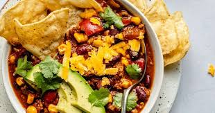

Chili

Description
Chili is a great dish because it's healthy, delicious,
and can be easily made in bulk. It's a great option
for meal preppers aiming to build muscle!
Ingredients
- ground turkey
- yellow onion
- canned diced tomatoes
- spices
Steps
- cook the ground turkey in a pan
- drain out the fat from the ground turkey
- chop up the onion
- add the turkey, onion, tomatoes, and spices to a slow cooker
- cook on high heat for 3 hours
- enjoy!